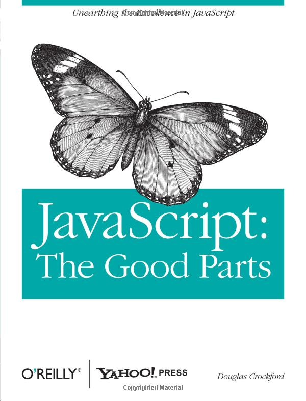

Modern Web Development with JavaScript
Rohit Kalkur - K83C
Course Objectives
- JavaScript Refresher
- How to Structure a Modern Web Application
- Overview of Client-side JavaScript Frameworks
- Test Driven Development
- Build our own Application!
History of JavaScript
- Created by Netscape engineer Brendan Eich in April 1995
- First called Mocha and then LiveScript
- Has nothing to do with Java despite the name!
JavaScript - Primitive Data Types
/* Variable Initialization/Declaration */
var myVariable = 5;
var myString = "myString";
var myBoolean = false;
/* Print Output To Debug Console */
console.log("my variable is " + myVariable); // Output: "my variable is 5"
console.log("my string is " + myString); // Output: "my string is myString"
console.log( typeof myVariable ); // Output: "number"
console.log( typeof myString ); // Output: "string"
console.log( typeof myBoolean ); // Output: "boolean"
JavaScript - Objects
/* Object Initialization/Declaration */
var obj = {
"prop1" : 5,
prop2 : "value of property 2"
};
console.log( obj.prop1 ); // Output: 5
console.log( obj["prop2"] ); // Output: "value of property 2"
console.log( typeof obj ); // Output: "object"
JavaScript - Arrays
/* Array Initialization/Declaration */
var myArray = [1, 3, 4];
myArray.push(5); // Appends 5 to myArray
myArray.pop(); // Remove the last value in the Array and returns it
myArray.length; // Returns the number of elements in the Array
/* Array is a type of object */
console.log( typeof myArray ); // Output: "object"
JavaScript - Boolean Logic
/* Comparison Operators */
console.log( 0 == false ); // Output: true
console.log( 0 === false ); // Output: false
console.log( 0 != false ); // Output: false
console.log( 0 !== false ); // Output: true
/* Ternary Statement */
var val = 0 <= 15 ? "less than or equal to" : "greater than";
console.log(val); // Output: "less than or equal to"
JavaScript - Loops
/* For loop */
for(var i = 0; i < 5; i++) {
console.log(i);
}
/* Output: prints the numbers 0-4 */
/* While loop */
var i = 0;
while (i<5) {
console.log(i);
i++;
}
/* Output: prints the numbers 0-4 */
/* Loop through object properties */
var myObject = { prop1 : 1, prop2 : 2, prop3 : 3 };
for(var key in myObject) {
console.log("key: " + key + ", value: " + myObject[key]);
}
/* Output: prints each key, value pair
"key: prop1, value: 1"
"key: prop2, value: 2"
"key: prop3, value: 3"
*/
JavaScript - Functions
/* Function Initialization/Declaration */
function myFunction() {
if(arguments[0]) {
console.log("This is my function with arg " + arguments[0]);
} else {
console.log("This is my function!");
}
}
myFunction(); // Output: "This is my function!"
myFunction(1); // Output: "This is my function with arg 1"
var mySecondFunction = function(arg) {
console.log("This is my other function with arg " + arg);
};
mySecondFunction(2); // Output: "This is my other function with arg 2"
(function() {
console.log("Immediately Invoked Function Expression (IIFE)");
})() // Output: "Immediately Invoked Function Expression (IIFE)"
JavaScript - Context
var user = {
name : "Al Grasso",
printName : function() {
console.log("Username: " + this.name);
}
}
user.printName(); /* Output: "Username: Al Grasso" */
JavaScript - Prototypical Inheritance
-- TODO: Insert diagram of prototype chain --JavaScript - Prototypical Inheritance
/* Base prototype */
var fruit = {
"color" : null,
"shape" : null
}
/* Orange constructor */
function Orange() {
this.color = "orange";
this.shape = "round";
this.makeJuice = function() {
console.log("Made orange juice!");
}
}
Orange.prototype = fruit;
/* Bananas constructor */
function Banana() {
this.color = "yellow";
this.shape = "long curving cylinder";
}
Banana.prototype = fruit;
var myOrange = new Orange();
var myBanana = new Banana();
console.log(myOrange.color); // Output: "orange"
console.log(myBanana.color); // Output: "yellow"
myOrange.makeJuice(); // Output: "Made orange juice!"
myBanana.makeJuice(); // TypeError: Object #<Banana> has no method 'makeJuice'
console.log( myOrange instanceof Orange ) // Output: true
console.log( myOrange instanceof Object ) // Output: true
console.log( myOrange instanceof Banana ) // Output: false
JavaScript - Scope
- Established within each function
- 'var' keyword scopes variable to the function it is contained within
- If reference not found in current scope, the above scope is checked
var a = 1;
function funcOne() {
a = 2;
}
funcOne();
console.log(a); // Output: 2
var b = 1;
function funcTwo() {
var b = 2;
}
funcTwo();
console.log(b); // Output: 1
function funcThree() {
function funcFour() {
console.log("Four");
}
funcFour();
}
funcThree(); // Output: "Four"
funcFour(); // ReferenceError: funcFour is not defined
JavaScript - Hoisting
function printA() {
console.log(a);
var a = 1;
}
printA(); // Output: Any guesses? Try inputting it into the console
printNumber(4); // Output: "The number is 4"
function printNumber(num) {
console.log("The number is " + num);
}
printFoo(4); // TypeError: undefined is not a function
var printFoo = function(foo) {
console.log(foo);
}
JavaScript - Exception Throwing/Handling
function throwError(message) {
throw Error("ERROR: " + message);
}
try {
console.log("This will print to the console");
throwError("You've got problems!");
console.log("This will not print to the console");
} catch(error) {
console.log(error.message); // Output: "You've got problems!"
}
JavaScript - Element Selection & Event Binding (via JQuery)
/*
Select the HTML element with id = element1 & bind a click event to it
*/
$("#element1").on('click', function(e) {
e.preventDefault();
console.log("clicked on element1!");
});
/*
Unbind the 'click' event from all elements with the class tag 'listing'
*/
$(".listing").off('click');
Reminders
- Always scope your variables!
- Everything except the primitive data types (number, boolean, string) is an object!
- use
null(instead ofundefined) to mean 'having no value' - Always use strict comparison operators!
Lab Time - JavaScript
Click to begin labJavaScript Back In the Day
JavaScript Today!
- As browsers have evolved over time, so has JavaScript feature set
- More application logic now being done on the client-side itself
- Primary benefits are to speed and performance
DOM
- Document Object Model
- API for interacting with HTML markup as objects
- HTML is just text, DOM is what we use to interface with it
- Often times the terms (HTML, DOM) are used interchangeably
JSON
- JavaScript Object Notation
- Data format based on JavaScript objects
- Note: Keys must be double quoted!
- Benefit: Easy to work with in JavaScript!
{
"key1" : 1,
"key2" : "two",
"key3" : [1, { "key" : "value" }],
"key4" : true
}
HTTP
- Hypertext Transfer Protocol
- Method of communicating between client and server sides
- Client sends Request, server comes back with Response
- Request consists of info such as:
- Path '/path/to/go/to'
- Method GET
- Paramters Key-value pairs
AJAX
- Asynchronous JavaScript and XML
- Retrieve data from server via HTTP requests
- Only update parts of the view as necessary
REST
- Representational State Transfer
- Design for communicating with server-side via HTTP to manipulate back-end data objects
- Uses 4 HTTP methods:
- GET - Retrieve a resource
- POST - Create a resource
- PUT - Update a resource
- DELETE - Delete a resource
REST
- Example: I want to retrieve the list of users
- Request: GET '/users'
- Response: JSON object
[
{
"id" : 0,
"username" : "agrasso",
"email" : "agrasso@mitre.org",
},
{
"id" : 1,
"username" : "rkalkur",
"email" : "rkalkur@mitre.org",
}
]
REST
- Example: I want to delete the user with id 1
- Request: DELETE '/users/1'
- Response: JSON object
{ "message" : "User rkalkur was deleted!" }
Lab Time - Client-Server Interaction
Click to begin labTraditional Application Structure
--- insert diagram here ---
Single Page Application (SPA)
--- insert diagram here --- Data retrieved from server-side via REST API serving up JSON data Client-side code makes AJAX calls to server-side API when data is needed
- AJAX requests made to REST API to manipulate back-end data resources
- Only individual pieces of the DOM are updated as needed
- No complete page reload!
Benefits of SPA Architecture
- View rendering/updating all done on the client-side itself!
- Less requests to the server-side = a faster application!
JavaScript Client-Side Frameworks
Backbone.js
- Created by Jeremy Ashkenas
- Client-side code separated into Models, Collections, Views, and Routers
Backbone.js - Model
- Representation of back-end data resources
- Responsible for interacting with back-end via REST API
- Triggers events when changed
var Employee = Backbone.Model.extend({});
/* Create instance of Employee */
var ceo = new Employee({ name : "Al Grasso" });
Backbone.js - Collection
- Set of data models
- Can also manipulate resources via REST API (fetch all models, create model)
- Triggers events when models are added or removed
var EmployeeList = Backbone.Collection.extend({
model: Employee,
url: '/employees'
});
/* Create instance of EmployeeList */
var employees = new EmployeeList();
/* Bind a callback fn to employee's add event */
employees.bind('add', function() {
console.log("Employee was added to employees");
});
/* Fetch list of all employees from server */
employees.fetch(); // Sends HTTP request - GET '/employees'
Backbone.js - View
- Responsible for rendering, updating, and event handling on a section of the DOM
- Associated with a model or collection (can bind to events)
var EmployeeListView = Backbone.View.extend({
events : {
"click li" : "triggerEmployeeClickedMsg" // View event binding
},
initialize : function() {
this.listenTo(this.collection, 'reset', this.render);
},
render : function() {
var thisView = this; // Store view context in thisView
thisView.$el.empty(); // Clear the existing list
// Add each employee to the list
_.each(thisView.collection.models, function(employee) {
var employeeListing = "" + employee.get('name') + " ";
thisView.$el.append(employeeListing);
});
},
triggerEmployeeClickedMsg : function() {
alert("Employee listing was clicked!");
}
});
/* Create instance of EmployeeListView */
var employeeListView = new EmployeeListView({
el : 'ul#employeeList' // DOM element that view will correspond to
});
Backbone.js - Router
- Serialize application state from browser URL structure
- Triggers functions when patterns matches browser URL
- Prevents reload request to server-side
- Delegates to hash routing if HTML5 History API not available
var AppRouter = Backbone.Router.extend({
routes : {
"user/:id" : "user", // Matches '/user/1' for History API or '#/user/1' for hash routing
"about" : "about" // Matches '/about' for History API or '#/about' for hash routing
},
user : function(id) {
loadUserPage(id);
},
about: function() {
loadAboutPage();
}
});
Lab Time - Backbone.js
Click to begin labBackbone.js - Pros
- Provides basic structure for client-side code
- Highly customizable
- Extension Frameworks:
Backbone.js - Cons
Developer is responsible for:
- Dereferencing unused objects
- Cleaning up event bindings
- Keeping view and data models synchronized (boilerplate code)
Angular.js
- Created by Google
- Automatically synchronizes view with data model (two-way data binding)
Angular.js - Template
<!doctype html>
<html ng-app>
<head>
<script src="https://ajax.googleapis.com/ajax/libs/angularjs/1.0.8/angular.min.js"></script>
</head>
<body ng-controller="UsersCtrl">
<ul>
<li ng-repeat="user in users">
<div class="name">{{ user.name }}</div>
<div class="email">{{ user.email }}</div>
</li>
</ul>
</body>
</html>
Angular.js - Controller
- Responsible for application logic
- Attach properties to $scope object
function UsersCtrl($scope, Users) {
$scope.users = Users.query();
}
Angular.js - Resource
- Allows user to interact with with server-side resources via REST
- Injected into a controller as a 'service'
- Can be extended if need be
$resource('/users');
Lab Time - Angular.js
Click to begin labAngular.js - Pros
- Template Filters
- HTML Directives (HTML tags with customizable behavior)
- Dependecy Injection
- Uses a smaller version of JQuery (JQuery lite)
- Naturally supports unit testing
- Less boilerplate code = smaller JS code base!
Angular.js - Cons
Steep learning curve!
Test Driven Development
- Write a failing test - given an this input, I expect this output
- Implement functionality to pass the test
- Tests serve as 'blueprint' for functionality
Test Driven Development
- Clearly defined interfaces
- Fewer bugs
- Faster development time
Pros:
Test Driven Development
- Jasmine BDD
- Mocha
Popular Testing Frameworks:
Module Loading
- Problem: All code stored in a single file (typically called app.js)
- Can leads to global namespace conflicts
- Difficult to test individual components of codebase
- Becomes tough to read code!
Module Loading
- Soltuon: Separate code into individual files - modules
- Improves testability and performance
- Popular implementations:
CoffeeScript
- Alternative syntax that compiles down into JavaScript
- Includes cool features such as:
- more verbose, English-like syntax
- default parameter assignment
- O.O.P. class structure
- Click here to read more
JavaScript on the Server-side - Node.js
- Runs on the V8 JavaScript engine - same as Chrome
- Non-blocking I/O via callbacks
- Persistant communication channel between clients and server
Course Overview
About the Textbook
- By Douglas Crockford (the father of JSON)
- Discusses the "good" and "bad" parts of JS
- Describes best practices for writing clean, maintainable JS
- A must read for anyone writing lots of JS!
Additional Resources
Thank You!
- Ivan Ramiscal
- You all for partipating in this class!
Heads Up
reveal.js is a framework for easily creating beautiful presentations using HTML. You'll need a browser with support for CSS 3D transforms to see it in its full glory.
Vertical Slides
Slides can be nested inside of other slides, try pressing down.
Basement Level 1
Press down or up to navigate.
Basement Level 2
Cornify

Basement Level 3
That's it, time to go back up.
Slides
Not a coder? No problem. There's a fully-featured visual editor for authoring these, try it out at http://slid.es.
Point of View
Press ESC to enter the slide overview.
Hold down alt and click on any element to zoom in on it using zoom.js. Alt + click anywhere to zoom back out.
Works in Mobile Safari
Try it out! You can swipe through the slides and pinch your way to the overview.
Marvelous Unordered List
- No order here
- Or here
- Or here
- Or here
Fantastic Ordered List
- One is smaller than...
- Two is smaller than...
- Three!
Transition Styles
You can select from different transitions, like:
Cube -
Page -
Concave -
Zoom -
Linear -
Fade -
None -
Default
Themes
Reveal.js comes with a few themes built in:
Sky -
Beige -
Simple -
Serif -
Night -
Default
* Theme demos are loaded after the presentation which leads to flicker. In production you should load your theme in the <head> using a <link>.
Global State
Set data-state="something" on a slide and "something"
will be added as a class to the document element when the slide is open. This lets you
apply broader style changes, like switching the background.
Custom Events
Additionally custom events can be triggered on a per slide basis by binding to the data-state name.
Reveal.addEventListener( 'customevent', function() {
console.log( '"customevent" has fired' );
} );
Slide Backgrounds
Set data-background="#007777" on a slide to change the full page background to the given color. All CSS color formats are supported.
Image Backgrounds
<section data-background="image.png">Repeated Image Backgrounds
<section data-background="image.png" data-background-repeat="repeat" data-background-size="100px">Background Transitions
Pass reveal.js the backgroundTransition: 'slide' config argument to make backgrounds slide rather than fade.
Background Transition Override
You can override background transitions per slide by using data-background-transition="slide".
Clever Quotes
These guys come in two forms, inline:
“The nice thing about standards is that there are so many to choose from”
and block:
“For years there has been a theory that millions of monkeys typing at random on millions of typewriters would reproduce the entire works of Shakespeare. The Internet has proven this theory to be untrue.”
Pretty Code
function linkify( selector ) {
if( supports3DTransforms ) {
var nodes = document.querySelectorAll( selector );
for( var i = 0, len = nodes.length; i < len; i++ ) {
var node = nodes[i];
if( !node.className ) ) {
node.className += ' roll';
}
};
}
}
Courtesy of highlight.js.
Intergalactic Interconnections
You can link between slides internally, like this.
Fragmented Views
Hit the next arrow...
... to step through ...
any type- of view
- fragments
Fragment Styles
There's a few styles of fragments, like:
grow
shrink
roll-in
fade-out
highlight-red
highlight-green
highlight-blue
Spectacular image!

Export to PDF
Presentations can be exported to PDF, below is an example that's been uploaded to SlideShare.
Take a Moment
Press b or period on your keyboard to enter the 'paused' mode. This mode is helpful when you want to take distracting slides off the screen during a presentation.